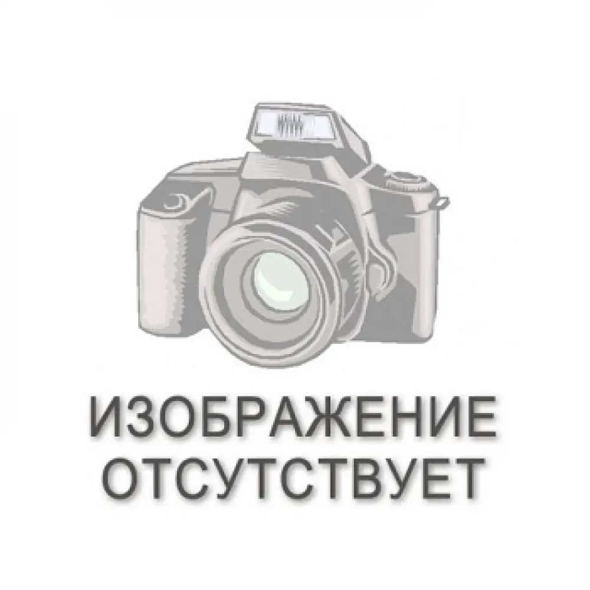

Если у Вас есть проблемы с алкоголем, возможно,
«АНОНИМНЫЕ АЛКОГОЛИКИ»
Помогут Вам!
Новости групп

Новости комитета по 5 традиции
Новичкам
Анонимные Алкоголики © — это содружество, объединяющее мужчин и женщин, которые делятся друг с другом своим опытом, силами и надеждами, чтобы решить свою общую проблему и помочь другим избавиться от алкоголизма.
Единственное условие для членства в АА — это желание бросить пить. Члены АА не платят ни вступительных, ни членских взносов. Мы содержим себя сами благодаря нашим добровольным пожертвованиям.
АА не связано ни с какой сектой, вероисповеданием, политическим направлением, организацией или учреждением; стремится не вступать в полемику по каким бы то ни было вопросам, не поддерживает и не выступает против чьих бы то ни было интересов.
Наша главная цель — оставаться трезвыми и помочь другим алкоголикам обрести здоровый, трезвый образ жизни.
Из книги «АА взрослеет»:
1934, летоДоктор Уильям Д. Силкуорт выносит Биллу У. приговор «безнадежный алкоголик». август — Эбби Т., друг Билла, трезвеет при помощи Оксфордских групп. ноябрь — Эбби навещает Билла и рассказывает ему свою историю. декабрь — Духовный опыт Билла в больнице Таунс. После духовного пробуждения, он и его жена Лоис присоединяются к Оксфордской группе, чьи принципы основаны на «четырех абсолютах»: честности, чистоте, бескорыстии и любви. Они начинают посещать собрания в Голгофском доме, за Голгофской Епископальной Церковью Манхэттена. Билл вдохновлен харизматичным ректором преподобным доктором Сэмюэлем Шумейкером, который делает акцент на личном общении. декабрь 1934 — май 1935 — Билл работает с алкоголиками, но ему не удается вытрезвить ни одного из них.
Доктор Боб и Билл встречаются в Акроне. 10 июня — Последняя пьянка доктора Боба. Основание Анонимных Алкоголиков. Доктор Боб и Билл часами разрабатывают наилучший подход к алкоголикам — людям, которые, как известно, не склонны следовать указаниям. Понимая, что размышления о трезвости только в течение дня делают ее более достижимой, чем борьба в течение всей жизни, они избрали концепцию двадцати четырех часов. Стремясь нести весть, Билл и доктор Боб ищут еще одного алкоголика. После звонка в городскую больницу Акрона они навещают адвоката Билла Д. В итоге, Билл Д. принимает их послание и обещает никогда больше не пить — обет, который он держит всю жизнь. Теперь Билла Д. вспоминают, как «человек на кровати», Билл Д. становится третьим членом группы, которая конечном итоге будет называться Анонимными алкоголиками.
Чарльз Б. Таунс, владелец городской больницы, предлагает Биллу работу в больнице, где тот мог бы лечить алкоголиков, проводить собрания и получать часть прибыли учреждения. В тот же вечер на собрании на Клинтон-Стрит Билл рассказывает своей группе об этом предложении. Но члены возражают, настаивая на том, что несение послания за деньги разрушит Единство.
Анонимные Алкоголики Нью-Йорка отделяются от Оксфордских групп. ноябрь — Доктор Боб и Билл, встречаясь в Акроне, подводят итог. Они обнаруживают, что по крайней мере 40 алкоголиков, с которыми они работали, оставались трезвыми в течение двух лет. Билл и Боб обсуждают: создание сети больниц, занимающихся лечением алкоголиков; привлечение наемных работников, которые распространяли бы послание; и литература (особенно книги), предназначенные для распространения этого послания повсюду.
Знакомство с Джоном Д. Рокфеллером, младшим. Он дает 5000 $. Отказывается дать больше. Спасает АА от профессионализма. май — Основывается Фонд алкоголиков, попечительство над АА. май — Начало написания книги Анонимные Алкоголики. декабрь — Написаны Двенадцать шагов.
Количество членов достигает 100. апрель — Опубликована книга «Анонимные Алкоголики». Обзор Книги, данный доктором Фосдиком. лето — Анонимные Алкоголики Среднего запада отходят от Оксфордских групп; АА становятся полностью самостоятельными. август — Доктор Боб и сестра Игнасия начинают работу в больнице святого Фомы в Акроне. В последующие десять лет они лечат 5000 алкоголиков. сентябрь — Внезапное расширение АА в Кливленде доказывает, что АА может вырасти до очень больших размеров. декабрь — Первая группа АА в психиатрической больнице Роклэнд Стейт, НьюЙорк.
Религиозные лидеры одобряют АА. Предшественники: Отец Доулинг, доктор Фосдик. февраль — Первый офис всемирного обслуживания АА, Визи стрит, НьюЙорк. февраль — Первый клуб АА, 334 1/2 Вест 24 Стрит, НьюЙорк, НьюЙорк. февраль — Ужин у Рокфеллера.
Статья в Сатедей Ивнинг Пост вызывает огромное признание и распространение АА. Количество членов к концу 1941 года подскакивает с 2000 до 8000.
Образование первой группы в тюрьме, Сан Квентин, Калифорния.
Основан АА Грейпвайн.
Доктор Силкуорт и Тедди Р. начинают работу в больнице Никербокер, Нью-Йорк. В последующие 10 лет они имеют дело с 10000 пациентами.
Впервые сформулированы и опубликованы Двенадцать традиций АА.
Американская Ассоциация психиатров признает АА.
Первая международная конференция в Кливленде. Движение АА принимает Двенадцать традиций. ноябрь — Умирает доктор Боб.
Собирается Первая общая конференция по обслуживанию, Начинается пятилетний экспериментальный период, объединяющий попечителей АА со всем товариществом. октябрь — Американская общественная ассоциация здоровья присуждает АА премию Ласкера в СанФранциско.
Публикация книги «Двенадцать шагов и двенадцать традиций».
Фонд Алкоголиков становится Советом общего обслуживания АА. Отказались от первоначальной идеи универсального Фонда.
Конференция к 20-летней годовщине АА в Сент-Луисе. Публикация второго издания книги «Анонимные Алкоголики». 3 июля — Ветераны передают движению АА три завета — Выздоровление, Единство и Служение.
Создание комитета по информированию общественности, который взял на себя работу по общественным связям (до этого выполнявшуюся Биллом У.)
Создание первого иностранного совета по обслуживанию АА в Великобритании и Ирландии. В октябре публикация книги «АА взрослеет». Количество членов АА переваливает за 200000 в 7000 групп в 70 странах и США.
Выходит полнометражная ТВ передача «Дни вина и роз». Кинофильм с этим же названием вышел в 1963 году. АА участвовали в производстве обоих.
A.A. Publishing, Inc. (Издательство АА) становится A.A. World Services, Inc. (Всемирное обслуживание АА).
Лонг Бич, Калифорния, Конференция к 25-й годовщине АА. Книга Джозефа Кесселя «С алкоголиками» («Avec Les Alcooliques») стимулирует рост АА во Франции и Германии.
Переписка Билла с доктором Карлом Юнгом. В 1930 году, помощь доктора Юнга одному алкоголику оказалась первым шагом в формировании АА.
Публикация книги «Двенадцать принципов всемирной службы», написанной Биллом У.
Первые попечители от регионов избраны в Совет по всеобщему обслуживанию. Эта процедура заменяет попечителей от округов, избиравшихся до этого от каждого штата. По новой процедуре Соединенные Штаты разделены на шесть регионов.
Этот период характерен стремительным ростом групп за рубежом. Он был ускорен увеличившейся деятельностью всемирной службы: консультативной перепиской, учреждением новых литературных центров, большим количеством новых и качественных переводов, лучшим внедрением традиций АА и т.д.
Конференция по случаю 30-й годовщины в Торонто, Канада. Присутствовало более 10000 человек. Краеугольным камнем собрания стала, впоследствии широко используемая Декларация — «И Я отвечаю за это... Если где-то кто-то в беде, и ему нужна наша помощь, АА всегда будет рядом, И я отвечаю за это...». В Торонто вышло карманное подарочное издание книги «Двенадцать шагов и двенадцать традиций». Снят цветной документальный фильм только для просмотра на группах, где Билл и Лоис рассказывают историю раннего периода АА.
Смена количественного соотношения Попечителей в Совете Всеобщего обслуживания для обеспечения большинства (2 трети) членов-алкоголиков, ставшая историческим событием, в котором Сообщество АА принимает на себя максимальную ответственность за будущее ведение своих дел. С этой сменой число региональных попечителей возрастает до восьми — шесть от США и два от Канады.
Публикация книги «Жизнь по АА» (сейчас озаглавленная «Как это видит Билл»), которая представляет из себя выдержки из записок Билла У. В этот период количество групп АА вырастает с 5927 до 13279; зарубежные группы представляют уже около 20% всего АА.
В НьюЙорке, 9–11 октября, проводится первое собрание Всемирной службы с представительством делегатов от 14 стран. (С 1972 эти собрания проводятся каждые два года).
В МайамиБич, Флорида, проводится Международная конференция по случаю 35й годовщины. Примерно 11000 присутствующих. Последнее появление Билла на публике. Основная идея доклада — Декларация Единства.
Билл умирает 24-го января в МайамиБич, Флорида. Его имя, фотография и история впервые распространяются общественными средствами массовой информации по всему миру. 14 февраля группы АА во всем мире проводят мемориальные рабочие собрания.
Публикация книжки «Пришли к убеждению...», которая выражает широкий спектр личных духовных взглядов членов АА.
Распространение книги «Анонимные Алкоголики» достигает 1000000 экземпляров.
Публикация книжки «Жить трезвым», подробно излагающей практические методы, которые используют члены АА для того, чтобы не пить.
Более чем 1000000 членов, почти 28000 групп по всему миру. Публикуется третье издание книги «Анонимные Алкоголики».
Тираж журнала «Грейпвайн» превышает 100000. Распространение книги «Анонимные Алкоголики» переходит отметку в 2000000 экземпляров.
Количество зарегистрированных делегатов переваливает за 22500 человек, когда Анонимные Алкоголики собираются в Новом Орлеане, чтобы отпраздновать «Радость жизни» на Международной конференции АА к 45-й годовщине Сообщества. Книга «Доктор Боб и славные ветераны», представленная на съезде, объединяет в себе биографию и историю АА на Среднем Западе.
Распространение книги «Анонимные Алкоголики» превышает отметку в 3000000.
умирает Лоис Бернхэм Уилсон.
Если вам кажется, что у Вас есть проблемы, связанные с пьянством, или что употребление алкоголя достигло той точки, когда это начинает вас беспокоить, то скорее всего вам будет интересно ознакомиться с деятельностью Анонимных Алкоголиков и с предлагаемой нами Программой выздоровления от алкоголизма.
Возможно, прочитав этот текст, вы решите, что АА вам не подходит. В таком случае мы вам советуем всего лишь непредвзято отнестись к затронутым здесь вопросам. Внимательно рассмотрите то, как вы пьете, в свете сведений, почерпнутых на этих страницах. Определите сами для себя, действительно ли алкоголь стал для вас проблемой.
И помните, что вас всегда с радостью ждут в АА тысячи мужчин и женщин, которые оставили свои алкогольные проблемы позади и теперь ведут «нормальный» продуктивный трезвый образ жизни. Членами АА являются тысячи мужчин и женщин, которые оставили свои алкогольные проблемы позади и теперь ведут «нормальный», то есть, продуктивный и трезвый образ жизни.
И помните, что если вы захотите вступить в АА, мы всегда будем вам рады...
Кто мы такие?Все мы, члены АА, являемся мужчинами и женщинами, которые обнаружили и признали, что со своей тягой к спиртному нам не совладать. Мы поняли, что должны жить без алкоголя, если хотим отвратить несчастье от себя и наших близких.
Будучи членами местных групп, работающих в тысячах населенных пунктов, мы являемся частью неформального международного Содружества, которое охватывает около 150 стран, включая и Россию. Основная цель у нас одна: оставаться трезвыми самим и помогать тем, кто обращается к нам с просьбой помочь бросить пить.
Мы не связаны ни с каким объединением, политическим направлением или вероисповеданием, никого не исправляем и не занимаемся никакими реформами. Сделать трезвыми весь мир мы также не собираемся. Мы рады новым членам, но никого не вербуем. Если нас просят поделиться своим опытом решения проблемы алкоголизма — мы это делаем, но никому его не навязываем.
В АА можно встретить людей самого разного возраста, с разным образованием, общественным и материальным положением. Некоторые из нас пили на протяжении долгих лет, прежде чем осознали, что уже не в силах бороться со своей тягой к алкоголю. Другие, к счатью, воспользовались этим пониманием значительно раньше, пока еще были молодыми или только начали пить.
То, до чего нас довел алкоголь, тоже проявлялось по-разному. Кто-то обратился в АА, уже вконец опустившись, кто-то потерял собственность, семью, чувство собственного достоинства, опустился настолько, что жил в трущобах. Некоторые из нас неоднократно побывали в тюрьмах и на принудительном лечении в больницах. Наше поведение было преступным по отношению к семьям, работодателям, к самим себе и к обществу в целом.
Но и те из нас, кто никогда не попадали ни в тюрьмы, ни на принудительное лечение, чье употребление спиртного еще не довело ни до потери работы, ни до развала семьи, в конце концов также осознали, что алкоголь мешает нам нормально жить. И когда мы обнаружили, что не способны жить без алкоголя, то тоже обратились за помощью в АА.
В нашем Содружестве есть представители всех основных религий, и многие религиозные лидеры способствовали росту АА. Среди нас есть даже атеисты и, как они себя называют, агностики. Однако наличие веры или формальная принадлежность к какой бы то ни было религии или церкви не является условием, необходимым для членства.
Всех нас объединяет общая для всех нас проблема — алкоголь. То что мы встречаемся, общаемся и сообща помогаем другим алкоголикам, каким-то образом помогает и нам самим оставаться трезвыми и избавляет от навязчивого стремления выпить, от той силы, которая в свое время подчиняла себе всю нашу жизнь.
Мы не считаем, что только наш подход к проблеме алкоголизма является единственно правильным. Просто мы убедились, что Программа АА помогает как нам самим, так практически каждому вновь пришедшему, если он честно и искренне хотел бросить пить.
Благодаря АА мы научились лучше разбираться в себе и в природе алкоголизма. Мы стараемся никогда не забывать того, что узнали, поскольку похоже, что это и есть тот самый ключ к решению проблемы сохранения нашей трезвости. А для нас сохранение трезвости должно всегда оставаться на первом месте.
Прежде всего мы узнали, что проблема алкоголизма — одна из старейших в истории человечества. Лишь относительно недавно новые подходы к ее решению начали давать свои результаты. Сегодня, к примеру, врачам известно об алкоголизме гораздо больше, чем их предшественникам каких-то два поколения тому назад. Они уже дают определение проблемы и изучают ее в деталях.
Хотя в АА и не существует никакого «официального» определения алкоголизма, большинство из нас согласно с тем, что для нас его можно определить, как сочетание непреодолимого физического влечения с психической одержимостью. Другими словами, у нас отчетливо проявлялось физическое желание употреблять алкогольные напитки в количествах, превышающих все разумные пределы и приводивших к потере контроля над собой. У нас не только возникало неудержимое желание выпить, но и поддавались мы этому желанию частенько в самое неподходящее время. Мы не знали когда (или как) остановиться. Подчас у нас даже не хватало здравого смысла, чтобы вообще не начинать пить.
Став алкоголиками, мы убедились на собственном тяжком опыте, что одной силы воли, какой бы большой она у нас ни была в отношении других вопросов, было явно недостаточно, когда дело касалось воздержания от алкоголя. Мы давали зарок не пить в течении какого-то времени, мы давали торжественные обещания, мы переходили с одних алкогольных напитков на другие, пытались пить только в определенные дни или часы, но ни один из наших методов не срабатывал. Рано или поздно мы умудрялись напиваться не только когда не хотели пить, но и тогда, когда это явно противоречило всяческому здравому смыслу.
Мы прошли через периоды полного отчаяния, когда были уверены, что с нашей психикой что-то не в порядке. Мы ненавидили себя за то, что по нашей вине страдали наши родные и близкие, что мы загубили собственные таланты. Нас часто охватывали приступы саможалости, и мы заявляли, что нам уже ничто не поможет.
Сейчас мы смеемся, вспоминая все это, но тогда нам было не до смеха.
Теперь мы готовы признать, что в случае с нами это действительно болезнь, и болезнь прогрессирующая, от которой невозможно «вылечиться» полностью, но остановить развитие которой — как останавливают развитие других болезней — можно. Мы считаем, что в этой болезни нет ничего постыдного, если только по-честному взглянуть на проблему и постараться как-то ее решить. Мы совершенно открыто признаем, что у нас аллергия на алкоголь, и что простой здравый смысл нам подсказывает держаться подальше от источника нашего заболевания.
Теперь-то мы понимаем, что как только человек переступает ту невидимую черту, которая отделяет пьянство от алкоголизма, он навсегда превращается в алкоголика. Нам пока что не известно ни одного случая, когда бы алкоголик смог снова выпивать «только по праздникам». Поэтому мы исходим из того непреложного факта, что «если уж кто-либо стал алкоголиком, то это — навсегда.»
Мы также убедились в том, что особого выбора у алкоголиков нет: если они не прекращают пить, то болезнь прогрессирует и наверняка приведет их на самое дно, в тюрьмы, в больницы и прочие заведения, а то и преждевременно сведет их в могилу. Единственное спасение — это полностью прекратить пить и не брать в рот ни капли никакого спиртного. Если алкоголики готовы последовать этому совету и воспользоваться предлагаемой помощью, то перед ними может открыться совершенно новая жизнь.
Было время, когда мы были убеждены: чтобы контролировать употребление алкоголя нам необходимо одно единственное — остановиться после определенного количества рюмок — второй или пятой и т.д. Лишь постепенно мы пришли к пониманию, что напиваемся не из-за второй, пятой, или десятой рюмки, а из-за самой первой! Именно первая рюмка запускала нашу карусель. Именно она вызывала цепную реакцию алкогольного мышления, что и приводило нас к неуправляемому пьянству.
В АА на этот счет бытует выражение, что «для алкоголика тысячи рюмок — слишком мало, а одной — слишком много.»
Многие из нас ещё до того, как бросить пить, убедились на собственном опыте, что «принудительная трезвость» — вещь малоприятная. Некоторым удавалось не пить по нескольку дней, недель или даже годами. Но мы ощущали себя мучениками, да и радости от такого воздержания было немного. Мы начинали проявлять раздражительность в отношениях с родными и сослуживцами и по-прежнему не могли дождаться, когда же нам снова можно будет пить.
Теперь же, став членами АА, мы относимся к трезвости иначе. Мы наслаждаемся чувством свободы, ощущением независимости даже от тяги к спиртному. Поскольку нам не приходится ожидать, что мы сможем пить нормально когда-либо в будущем, все наши помыслы целиком сосредоточены на том, как жить полноценной жизнью без алкоголя сегодня. Своего «вчера» нам никак не изменить, а «завтра», когда оно наступает, все равно становится «сегодня». Потому-то нас и интересует только это «сегодня». Мы прекрасно знаем из опыта, что даже распоследние алкоголики способны не брать в рот спиртного целые сутки, хотя для этого им и пришлось бы откладывать выпивку час за часом, а то и минута за минутой. Главное — они узнают, что ее можно отложить на какое-то время.
Первое время, когда мы только услышали про АА, нам казалось невероятным, что кому-то из настоящих алкоголиков удавалось хоть когда-либо обрести тот трезвый образ жизни, о котором нам рассказывали старые члены АА. Некоторые из нас были склонны считать, что пьют они как-то «по-другому», что их случай «особый», что если другим АА и помогало, то им самим оно точно помочь не сможет. Были среди нас и те, кто еще не испытал на себе всех ужасов алкоголизма; они рассуждали, что возможно и сами способны справиться со своей зависимостью, а АА годится для хронических алкоголиков.
Наш опыт в АА научил нас двум важным вещам. Во-первых; все алкоголики сталкиваются с одними и теми же основными проблемами, независимо от того, занимают ли они ответственные посты в крупных корпорациях, или же побираются, чтобы наскрести себе на кружку пива. Во-вторых, мы убедились в том, что Программа АА по излечению от зависимостей успешно работает практически для любого алкоголика, если тот искренне хочет по ней работать, независимо от особенностей его социального и материального положения, образа жизни в прошлом или способов употребления спиртного.
Прежде чем обрести чувство безопасности благодаря новому образу жизни без употребления алкоголя, все мы должны были принять одно крайне важное решение. Мы должны были взглянуть на себя и на свой алкоголизм честно и непредвзято. Нам было необходимо признать свое бессилие перед алкоголем. Для некоторых из нас это оказалось наитруднейшим делом из всех, с которыми мы когда-либосталкивались.
Мы не слишком-то много знали о самом алкоголизме. У нас были свои представления по поводу слова «алкоголик», и оно у нас связывалось с опустившимся пропойцей и изгоем. Мы считали, что это означает наличие слабой силы воли или слабого характера. Поэтому некоторые из нас никак не могли признать, что они алкоголики, а если и признавали, то с оговорками.
Однако же для большинства из нас стало большим облегчением узнать, что алкоголизм является болезнью. Мы увидели, что здравый смысл подсказывает что-то предпринять по поводу недуга, который грозил нас уничтожить. Мы перестали обманывать и других и себя, убеждая в той мысли, что с алкоголизмом можно справиться в одиночку, когда все факты говорили обратное.
С самого начала нас заверили, что никто не сможет нам сказать, являемся ли мы алкоголиками: ни врачи, ни священники, ни наши мужья или жены. Необходимо, чтобы признание исходило от нас самих. Нам предлагалось проанализировать известные лишь факты из собственной жизни. Наши друзья и родные, возможно, понимали природу наших проблем, однако определить наверняка, в состоянии ли мы еще контролировать свою тягу к спиртному способны только мы сами.
Мы часто спрашивали, как можно отличить, являемся ли мы настоящими алкоголиками, однако нам отвечали, что никаких четких способов определения этого не существует. Тем не менее, оказалось, что определенные показательные симптомы все же есть. Так, если мы напивались, когда нам этого совершенно не хотелось, или мы пили все больше и больше, а удовольствие от этого получали все меньше — то, скорее всего, это и были признаки той болезни, которую мы называем алкоголизмом. Вспоминая случаи из собственной пьяной жизни, а также их последствия, большинство из нас смогло обнаружить и дополнительные причины, по которым можно было распознать правду о себе.
Вполне естественно, что перспектива жизни без спиртного представлялась нам безотрадной. Мы боялись, что наши новые знакомые в АА окажутся либо занудами, либо, хуже того, религиозными фанатиками. Вместо этого оказалось, что они такие же люди, как и мы, обладающие к тому же особым даром относиться к нашим проблемам не с осуждением, а доброжелательно и с пониманием.
Нас интересовало, что нам придется делать, чтобы оставаться трезвыми, во что нам обойдется вступление в АА и кто руководит организацией на местах и в целом. Оказалось, что членство в АА не накладывает никаких обязательств, что здесь никого не принуждают проходить через какие-то официальные ритуалы или следовать предписанному образу жизни. Узнали мы также и о том, что в АА не платят ни вступительных, ни членских взносов, а чтобы покрыть расходы на аренду помещений, чай, сладости и литературу АА во время собраний по кругу пускается «шляпа». Но даже и такие добровольные пожертвования не являются обязательными для членства в АА.
Очень скоро нам становится ясно, что органимзационная структура АА сведена к минимуму и что тут нет никакого начальства.
Организацией собраний занимаются выборные представители группы, которых регулярно переизбирают, чтобы в служение приходили новые люди. Такой принцип «ротации» очень распространен в АА.
Каким же образом удается нам вести трезвый образ жизни в таком неформальном объединении?
Ответ заключается в том, что однажды придя к трезвости, мы стараемся сохранить ее и перенимаем успешный опыт тех, кто пришел в АА раньше нас.
Их опыт предоставляет нам определенные «инструменты» и рекомендации, которые мы вольны по своему усмотрению либо взять на вооружение, либо отвергнуть. Так как в нашей теперешней жизни для нас самым главным является трезвость, мы считаем, что было бы разумно последовать опыту, предлагаемому теми, кто своим собственным примером продемонстрировал реальную действенность Программы АА в избавлении от алкогольной зависимости.
Вместо того, чтобы давать клятвы и обещать, что мы «никогда» не притронемся к спиртному, мы просто стараемся следовать тому, что в АА называется «суточным планом». Мы стараемся поддерживать трезвость на протяжении данных конкретных суток, то есть, просто стремимся прожить еще одни сутки без алкоголя. Если мы ощущаем сильную потребность выпить, мы с ней не боремся, но и не поддаемся ей. Мы всего лишь «переносим» выпивку на завтра.
Во всем, что касается алкоголя, мы стараемся быть максимально честными и смотреть на вещи реалистично. Если нас тянет выпить — а по прошествии нескольких месяцев пребывания в АА эта тяга обычно ослабевает — мы спрашиваем себя, а стоит ли эта конкретная выпивка всех тех последствий, которые мы уже испытывали в прошлом. Мы понимаем, что если нам захочется напиться, мы вполне можем это сделать, и что выбор, пить или не пить, целиком остается за нами. Самым важным является то, что мы стараемся признать следующий факт: сколько бы времени ни прошло с тех пор как мы бросили пить, мы всегда будем алкоголиками, а алкоголики, насколько нам известно, уже никогда не смогут пить понемногу или как здоровые люди.
Перенимаем мы и другой успешный опыт «сторожилов АА». Мы стараемся регулярно ходить на собрания своей группы. Никаких правил, делающих посещения этих собраний обязательными, не существует, да и объяснить, чем и как выступления членов группы, их рассказы о себе, улучшают наше состояние, получается тоже не всегда. Тем не менее, большинство из нас считает, что посещение собраний и иные неформальные отношения с членами группы крайне важны для поддержания нашей трезвости.
Придя в АА, мы сразу услышали о Программе «Двенадцать Шагов» исцеления от алкоголизма. Мы узнали, что Шаги представляют собой попытки первых членов АА описать их собственный опыт перехода от неуправляемого злоупотребления алкоголем к трезвости. Мы открыли, что ключевыми факторами в этом, похоже, являются смирение и упование на силу более могущественную, чем наша собственная. Некоторые члены АА предпочитают называть ее «Бог», однако нам было сказано, что это личное дело — каждый волен понимать эту «Силу», как ему угодно. Так как в пору употребления спиртного алкоголь явно оказался сильнее нас, приходилось признать, что мы, вероятно, не способны с ним справиться самостоятельно и имеет смысл обратиться за помощью куда-то еще. По мере роста в АА каждый из нас обычно приходил к более ясному и серьезному пониманию этой более могущественной Силы. Но было оно чисто личным — без какого-либо принуждения со стороны.
Наконец, мы заметили из Двенадцатого Шага и из опыта более старых членов АА, что работа с обращающимися в АА за помощью алкоголиками являются эффективным способом укрепления нашей собственной трезвости. Каждый из нас, по мере возможности, старался поделиться своим опытом с новыми членами, помня при этом, что ответить на вопрос, являются ли они алкоголиками, могут только они сами.
Мы также руководствовались и опытом тех многочисленных членов АА, которые привнесли новый смысл в три ставших уже привычными поговорки или девизы. «Первым делом — главное» является одним из них и напоминает нам о том, что, как бы мы не хотели и не старались, мы не можем добиться всего сразу, и что в нашем стремлении перестроить свою жизнь каждый раз мы должны перво-наперво помнить о главном, то есть, о трезвости, а уж потом решать остальные проблемы.
Второе выражение из тех, что обрели для алкоголиков новое значение — «главное не суетиться». Многие из них частенько страдают тем, что проявляют излишние суету и нетерпение, за что бы они ни брались, тогда как опыт показывает, что алкоголики должны и могут научиться соизмерять свое рвение.
Третье выражение — «живи и давай жить другим» — служит постоянным напоминанием алкоголикам о том, что независимо от стажа трезвости они все равно не могут позволить себе проявления нетерпимости в отношениях с другими людьми.
Помогают в исцелении от алкоголизма и выпускаемые АА книги и брошюры. Вскоре после прихода в Общество у большинства из нас появилась возможность прочитать об опыте АА в книге «Анонимные Алкоголики». В ней первые члены АА рассказывают о себе и о тех принципах, благодаря которым — как они считали- им удалось освободиться от алкогольной зависимости. В поисках себя и моральной поддержки многие члены АА, остающиеся трезвыми уже долгие годы, вновь и вновь обращаются к этой и еще четырем нашим книгам. Помимо этого АА России издаёт и свой журнал «Дюжина», предназначенный как для новичков, так и для старожилов Общества.
Поскольку по сути АА представляет собой определенный образ жизни, мало кому из нас удавалось с абсолютной точностью указать, как и в чем конкретно помогают нам в сегодняшней трезвости различные элементы Программы по исцелению от алкоголизма. Каждый из нас толкует и применяет эту Программу по-своему. Однако все мы можем засвидетельствовать, что, в отличии от многих иных способов, Программа АА действительно помогла нам обрести трезвость. Но как и за счет чего это происходит — до конца не понимают даже те члены АА, которые живут в трезвости вот уже много лет. Они говорят, что просто приняли Программу «на веру», и, в то же время, стараются передать эту веру тем людям, которые все ещё продолжают слишком хорошо убеждаться на собственном опыте, каким разрушительным образом действует алкоголь на алкоголика.
Мы считаем, что Программа АА по исцелению от алкоголизма помогает практически всем, кто желает бросить пить. Это относится и к тем, кто считает, что пойти в АА их заставили пинками. Многие из нас впервые обратились в АА под давлением возникавших из-за алкоголя неприятностей в отношениях с окружающими или по работе, а уже потом принимали собственное решение остаться.
Мы видели, как кое-кто из алкоголиков какое-то время оступался, прежде чем «въехать» в Программу. Были и такие, кто только на словах следовал многократно испытанным принципам Программы, благодаря которой трезвый образ жизни сегодня ведут более двух миллионов алкоголиков — одних слов обычно не бывает достаточно.
Наш собственный опыт и наблюдения показывают, что, как бы низко не пал алкоголик, на каком бы социальном или экономическом уровне он ни находился, АА предлагает выход к трезвости из лабиринта алкоголизма. Большинству из нас отыскать его было не сложно.
На момент прихода в АА у многих из нас была куча серьезных проблем — неприятности с деньгами, на работе, дома, собственный тяжелый характер. Но мы скоро убеждались, что в центре всех наших проблем был алкоголизм. И как только мы решали эту главную проблему, нам удавалось успешно разобраться и со всеми остальными. Не всегда все решения достигались простым путем, но на трезвую голову найти их оказывалось легче.
Было время, когда многие из нас считали, что если бы не алкоголь, жизнь была бы вообще невыносимой. Мы не могли себе даже представить, что существует жизнь без спиртного. Сегодня, благодаря Программе АА, мы отнюдь не чувствуем себя «обделенными». Напротив, мы считаем, что нас «освободили», и испытываем такие чувства, как если бы в нашу жизнь было добавлено новое измерение. У нас появились новые друзья, новые горизонты, новые взгляды. После стольких лет отчаяния и безысходности многие из нас впервые ощутили, что только теперь и начали жить. Мы рады поделиться опытом этой новой жизни с любым человеком, который все еще страдает от алкоголизма, как когда-то страдали мы сами, но стремится вырваться из мрака к свету.
Алкоголизм является одним из самых серьёзных заболеваний в мире. Подсчитано, что от него страдают миллионы мужчин и женщин, возможно, без необходимости, ибо выход есть.
Мы, члены АА, рады возможности поделиться своим опытом трезвости с любым, кто попросит о помощи. Однако мы прекрасно понимаем: что бы мы ни говорили, ничего не изменится, пока человек сам не будет готов признать, как это сделали когда-то мы сами: «Алкоголь одолел меня полностью, и я хочу, чтобы мне помогали».
Только Вы можете решить, стоит ли Вам прийти в АА.
— может ли это Вам помочьМы же пришли в АА потому что, в конце концов, отказались от попыток контролировать свою выпивку. Нам очень не хотелось признать тот факт что мы никогда не сможем пить «нормально». Но от других членов АА мы узнали, что мы просто больные люди (Да мы и сами уже давно об этом догадывались!) Мы обнаружили, что очень много людей, так же как и мы страдают от чувства вины, одиночества и безнадежности. Мы узнали, что эти чувства были вызваны болезнью — алкоголизмом.
Мы решили все-таки попробовать и прежде всего бесстрашно увидеть то, что сделал с нами алкоголь. Вот некоторые вопросы, на которые мы постарались ответить честно. Если ответов ДА было четыре или более, то это указывало на серьезные проблемы с выпивкой. Попробуйте и вы. Помните, что нет ничего позорного в признании, что у вас есть эта проблема.
Для того, чтобы получить ответ на этот вопрос вы должны ответить честно на следующие вопросы: ДА или НЕТ.
Большинство из нас, членов АА, давали самые разные обещания самим себе и своим семьям. Но мы не могли их сдержать. Затем мы пришли в АА. Там нам сказали: «Попытайтесь не пить только сегодня.» (Если вы сегодня не выпьете, то сегодня и не напьетесь.)
В АА мы никому не указываем, что им следует делать. Мы просто рассказываем, как мы пили сами, к каким это привело неприятностям и как нам удалось это прекратить Мы будем рады вам помочь, если этого захотите вы.
Мы перепробовали все. Мы разбавляли выпивку, пили только пиво, старались не смешивать, пытались пить только в выходные дни. Что бы вы ни сказали — мы это тоже пробовали. И когда мы выпивали что бы то ни было,содержащее алкоголь, — мы, как правило, напивались.
Вам нужно опохмелиться, чтобы двигаться дальше, или чтобы прекратило трясти? Это один из верных признаков того, что вы пьете не «как все.»
Время от времени многие из нас задумывались, почему мы отличаемся от большинства других людей, которые могут контролировать свою выпивку.
Будем честными! Врачи утверждают, что если возникает проблема, связанная с алкоголем, и вы продолжаете пить, то эта проблема может только ухудшаться — она никогда не облегчается. В конце концов, вы можете либо погибнуть, либо до конца дней оказаться в закрытой больнице. Единственная надежда — прекратить пить.
До тех пор, пока мы не пришли в АА, многие из нас говорили что к выпивке нас подталкивают домашние проблемы или поведение окружающих. Мы отказывались видеть, что именно наше пьянство усугубляло все неприятности. Оно никогда не решало никаких проблем.
Большинство из нас предварительно «чуть-чуть принимали», если ожидалось, что это будет «не та» компания. И если выпивки по нашему мнению оказывалось недостаточно, мы шли куда-нибудь «добавить».
Многие из нас обманывали себя, считая будто мы пьем по желанию. Придя в АА мы поняли, что когда мы начинали пить, мы уже не могли остановиться.
Многие из нас теперь признаются, что частенько сказывались по телефону «больными», чтобы не выходить на работу, хотя на самом деле были пьяны или в тяжелом похмелье.
Имеются в виду случаи, когда мы пили в течение многих часов или нескольких дней, а потом ничего не могли вспомнить. Придя в АА мы убедились, что это один из явных признаков алкоголизма.
Многие из нас начинали пить потому, что после выпивки жизнь казалась лучше, по крайней мере, на некоторое время. К моменту прихода в АА мы почувствовали, что попали в ловушку. Мы пили чтобы жить, а жили — чтобы пить. Мы до смерти устали быть все время больными и усталыми.
Вы ответили ДА на четыре или более вопросов? Если так, то вы, вероятно, попали в беду.
Почему мы так считаем? Потому, что об этом говорили тысячи людей в АА в течение многих лет.
Они узнали правду о себе на своем собственном горьком опыте.
И все же только ВЫ можете решить, нужно ли вам АА.
Попытайтесь подойти к этому не предвзято.
Если вы скажете ДА, то мы будем рады показать вам, как мы сами бросили пить. Просто приходите.
АА не обещает решить все ваши жизненные проблемы. Но мы можем показать вам, как мы научились жить без выпивки «по одному дню».
Мы воздерживаемся только от этой «первой рюмки». Если не будет первой, то не будет и десятой.
И когда мы избавились от алкоголя, мы увидели, что наша жизнь стала гораздо более управляемой
Нуждаешься ли ты в выпивке на следующее утро?
Предпочитаешь ли ты пить наедине с собой?
Тратишь ли ты свое время без пользы из за выпивки?
Ущемило ли каким- либо образом твое употребление твою семью?
Хочешь ли ты выпить в определенное время дня?
Дрожат ли у тебя руки, пока не выпил?
Делает ли тебя твое питье склонным к гневу?
Делает ли твое питье тебя равнодушным к финансовому состоянию семьи?
Обидел (обидела) ли ты свою супругу (супруга) будучи нетрезвым?
Изменило ли питье твою личность?
Приводит ли твое питье к физической боли в теле?
Делает ли питье тебя беспокойным?
Вызывает ли питье у тебя бессонницу?
Усилило ли питье твою импульсивность?
Стал (стала) ли ты меньше контролировать себя в нетрезвом состоянии?
Уменьшилась ли твоя инициативность, за время от начала употребления тобой алкоголя?
Уменьшилась ли твоя амбициозность, за время употребления алкоголя?
Уменьшилась ли твоё упорство в достижении цели, за время от начала употребления тобой алкоголя?
Пьешь ли ты для того, чтобы чувствовать себя свободнее в обществе (касается несмелых, боязливых, озабоченных личностей)?
Пьешь ли ты для того, чтобы придать себе смелости (касается личностей с комплексом неполноценности)?
Пьешь ли ты для того, чтобы облегчить свое чувство некомпетентности?
Пострадала ли твоя потенция за время от начала употребления тобой алкоголя?
Чаще ли ты проявляешь свое неудовольствие и ненависть к чему либо, за время от начала употребления тобой алкоголя?
Стал (стала) ли ты более ревнивым (ревнивой), за время от начала употребления тобой алкоголя?
Ухудшилось ли твое чувство юмора за время от начала употребления тобой алкоголя?
Уменьшилась ли твоя трудоспособность за время от начала употребления тобой алкоголя?
Сделало ли питье тебя более ранимым?
Стало ли тяжелее справляться с собой, за время от начала употребления тобой алкоголя?
Стало ли хуже твое окружение, за время от начала употребления тобой алкоголя?
Угрожает ли питье твоему здоровью?
Влияет ли питье на твою рассудительность, твое мышление?
Влияет ли питье на качество твоей семейной жизни?
Угрожает ли питье твоим интересам и твоей работе?
Портит ли питье твою репутацию?
Нарушает ли питье гармонию твоей жизни?
Бывали ли у вас провалы в памяти под действием алкоголя или после этого?
Мучились ли вы угрызениями совести после пьянки?
Ощущали ли вы когда-либо неспособность контролировать себя во время или после питья?
Были ли у вас контакты с врачом по поводу пьянства?
Если вы ответили ДА на один из приведенных вопросов, есть опасения, что вы можете стать алкоголиком.
Если ответили ДА на два вопроса, то у вас есть много шансов стать алкоголиком.
Если ответили ДА на три и больше этих вопросов, то вы однозначно являетесь алкоголиком.
Эти вопросы ставились пациентам Университетской клиника Джона Хопкинса в Балтиморе с целью выяснения, является ли пациент алкоголиком.
Критерий определи себе сам. Никто в АА не ставит никому диагноза, являешься ты алкоголиком или еще нет.
Это должен определить только ты сам. Только ТЫ САМ решаешь, являешься ты алкоголиком или нет, и никто в АА не может заставить признать себя алкоголиком.
Единственным условием для участия в собраниях, является искреннее желание бросить пить.
Расписание
Мобильное приложение
Для iOS
(Установка через браузер Safari)- ✓ Нажмите на кнопку "Скачать для iOS"
- ✓ Откроется веб-страница в браузере "Safari"
- ✓ Нажмите "Поделиться"
- ✓ Нажмите "Добавить на главный экран"
- ✓ Нажмите "Добавить"
Для Android
Текущая версия: 1.9.3 от 19.02.2025- ✓ Исправлена ошибка сохранения рабочего собрания казначея